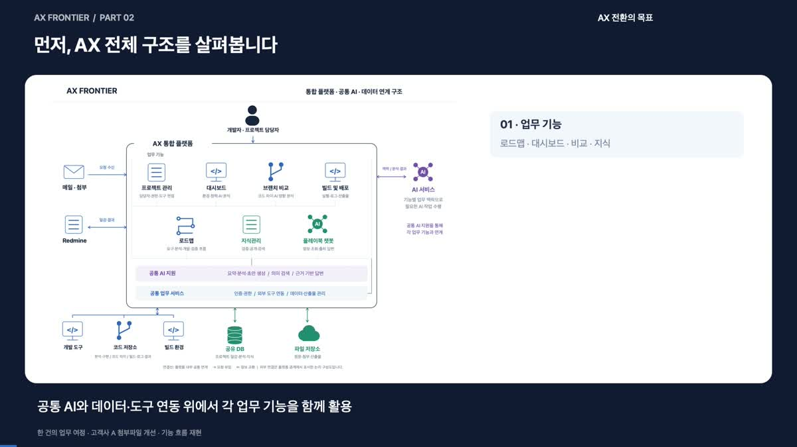

사내 4인 팀 프로젝트 · 2026.10 발표
AX Frontier
요구사항과 IDE 작업 결과를 하나의 일감으로 연결하는 AI 개발 협업 플랫폼
메일, 첨부 문서, 일감, 코드가 서로 다른 도구에 있어 요구사항이 바뀔 때마다 최신 기준과 변경 근거를 다시 찾아야 했습니다. AX Frontier는 일감에 요구사항과 단계별 산출물을 연결해 담당자와 에이전트가 같은 기준을 확인할 수 있게 합니다.
김기호 · 프로젝트 리드 및 전체 시스템 아키텍처 설계
시연 영상 보기핵심 기능
팀이 구현한 기능은 분석, 개발, 배포, 지식 재사용을 같은 프로젝트 작업 공간에 연결합니다.
- 프로젝트 대시보드
- GitLab 브랜치를 스캔해 빌드 환경과 라이브러리, Redmine 일감, 메일 이슈 초안을 한 화면에 모읍니다.
- 브랜치 내비게이터
- LOCAL·DEV·PROD 브랜치를 비교하고, 서버 주소나 SDK처럼 배포에 영향을 줄 수 있는 변경을 찾아 AI가 차이를 설명합니다.
- AX 로드맵
- 하나의 일감 안에서 여러 요구사항을 관리합니다. 요구사항별 완료 기준, 분석, 설계, 구현 및 테스트 근거를 연결합니다.
- 빌드·릴리즈
- GitLab CI에 빌드를 요청하고 로그와 APK·IPA를 확인합니다. 배포할 변경 파일과 코드 차이를 검토하고 변경 이력과 체크리스트를 준비합니다.
- 지식관리소
- Git 변경 이력과 완료 일감에서 해결 경험을 추출해 플레이북 초안을 만들고, 담당자가 검토한 뒤 팀에 공유합니다.
- 플레이북 챗봇
- 프로젝트 분석 결과, 산출물과 검증된 지식을 검색해 답변에 출처를 표시합니다. 인수인계와 유사 이슈 조사에 활용합니다.
시스템 아키텍처
웹과 IDE는 같은 프로젝트·일감에 접근합니다. Express 서버에서 업무 기준, 상태, 산출물과 승인 이력을 관리하고 외부 도구에 필요한 작업을 요청합니다.

- 웹 인터페이스
- Vue 3·TypeScript SPA에서 프로젝트 현황과 로드맵을 확인하고, 담당자가 단계별 산출물을 검토합니다.
- 플랫폼 서버와 저장소
- Express REST API가 인증, 일감 상태, AI 요청과 외부 연동을 처리합니다. MongoDB에 프로젝트 데이터와 이력을 저장하고, 파일 저장소는 환경에 따라 R2를 연결합니다.
- IDE와 에이전트
- Cursor는 MCP로 일감 맥락을 조회하고 작업 결과를 제출합니다. Claude Code와 Codex는 Hooks를 통해 세션과 작업 이력을 플랫폼에 남깁니다.
- 외부 업무 도구
- 메일은 IMAP으로 수집하고, Redmine은 일감 등록과 매핑, Slack은 알림, GitLab은 소스 저장소와 CI 실행을 담당합니다. 컴파일과 패키징은 연결된 CI Runner에서 수행합니다.
요구사항에서 배포까지
- 유입
- 접수
- Redmine 등록
- 분석
- 설계
- 개발
- 테스트
- 배포
- 요구사항 확정
- 메일과 첨부 문서에서 변환한 텍스트를 바탕으로 REQ ID와 수용 기준 초안을 작성합니다. 미확정 내용은 질문으로 남기고 담당자가 기준 버전을 승인합니다.
- 코드 영향 분석과 설계
- IDE 에이전트가 승인된 요구사항을 실제 코드와 대조합니다. 확인한 영향 파일과 코드 근거를 넘겨 REQ별 API, 데이터, 화면 상태, 오류 처리, 테스트 시나리오를 설계합니다.
- IDE 작업과 결과 제출
get_ticket_context로 승인된 문서와 완료 기준을 조회합니다. 에이전트가 작업 후 MCP로 구조화된 결과를 제출하면 플랫폼이 누락된 REQ와 현재 단계의 제출 조건을 확인합니다.- 검증과 승인
- 브라우저·Playwright 실행 결과를 수용 기준에 연결합니다. PM AI의 검수 의견과 실행 근거를 담당자가 확인한 뒤 결과를 수락합니다.
내가 맡은 역할과 설계 판단
4인 팀을 리딩하고 웹, IDE, AI, 외부 도구의 책임 경계를 설계했습니다. 기능별 구현은 팀의 결과물이며, 제가 맡은 범위는 전체 구조와 단계 간 데이터·승인 계약을 정하는 일이었습니다.
- 설계가 바뀌면 이전 승인도 다시 확인
- 설계 개정 번호를 구현·테스트 결과에 연결했습니다. 설계 변경 시 영향을 받은 개발 단위를 계획 상태로 돌리고 PM 검수 판정을 대기 상태로 갱신합니다. 예를 들어 설계 개정 2에서 통과한 테스트는 개정 3의 완료 근거로 집계하지 않습니다.
- AI 결과는 업무 데이터로 검증한 뒤 반영
- 설계 결과를 REQ별 서버·클라이언트 문서와 검증 시나리오로 받습니다. 활성 REQ 목록과 제출 목록을 비교해 누락을 차단합니다. 코드 근거와 설계 품질은 별도 검수에서 확인합니다.
- 테스트 생성과 실제 통과를 구분
- 설계 시나리오는 대기 상태의 테스트 후보로 생성합니다. REQ와 설계 ID, 기준 버전과 개정 번호를 함께 저장하고, 현재 설계에 연결된 테스트의 채택·통과 결과를 완료 판정에 사용합니다.
- 검증된 지식의 범위 안에서 검색
- MongoDB 벡터 검색에 게시 상태와 임베딩 모델 조건을 적용하고 프로젝트·조직 공유 범위를 반영합니다. 답변에서 사용한 산출물과 플레이북을 확인할 수 있게 구성했습니다.
시연 결과와 후속 과제
메일을 일감으로 등록하고 IDE에서 작성한 분석·설계 결과를 반영한 뒤, 브라우저 테스트와 검수 결과를 확인하는 흐름을 시연했습니다. 빌드·배포 화면과 근거가 표시되는 플레이북 챗봇도 함께 시연했습니다.
후속 과제로 챗봇 답변 품질 평가, 운영 로그 기반 진단, 서버 프로젝트로의 적용 범위 확대를 정리했습니다.
AX Frontier 시연 영상 ↗